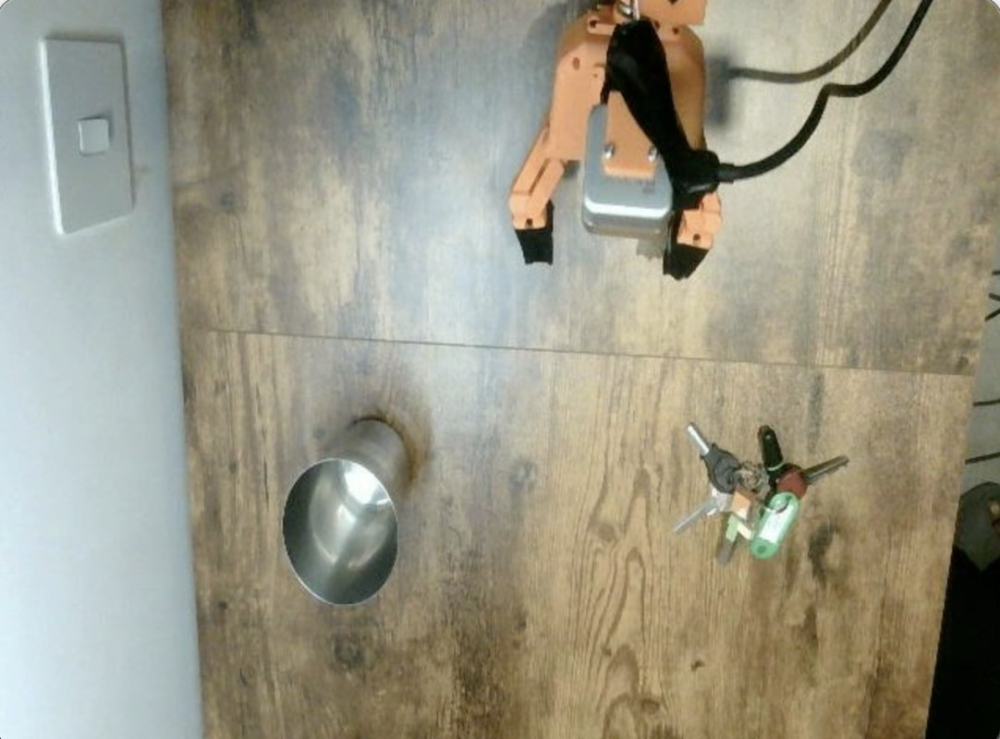
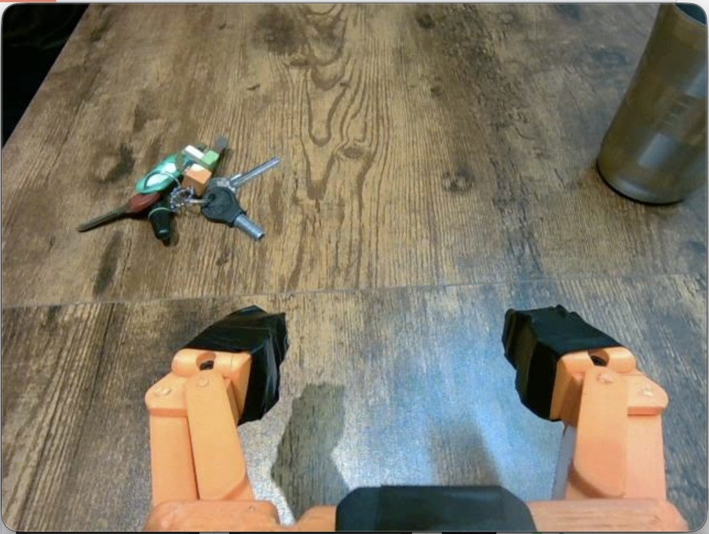
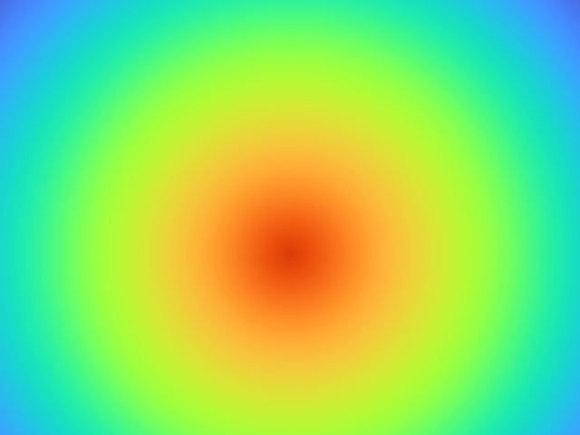
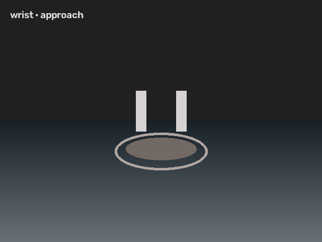
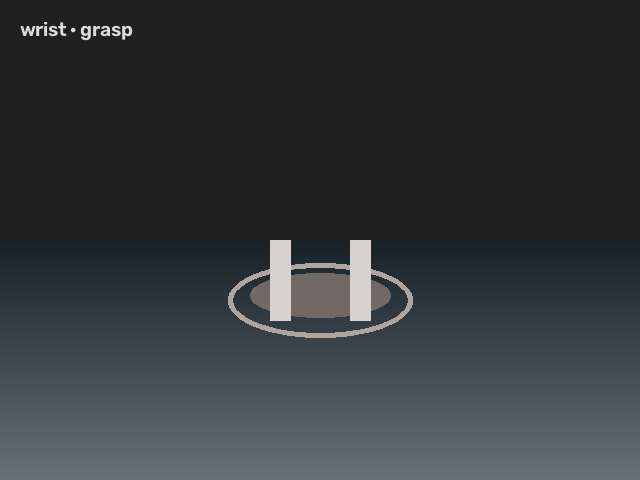
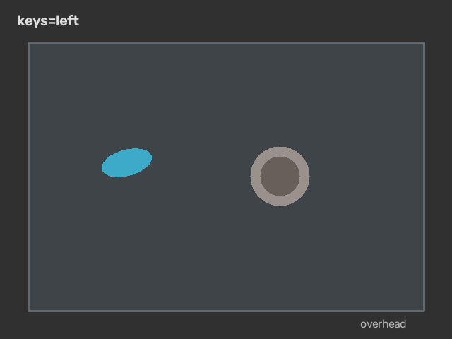
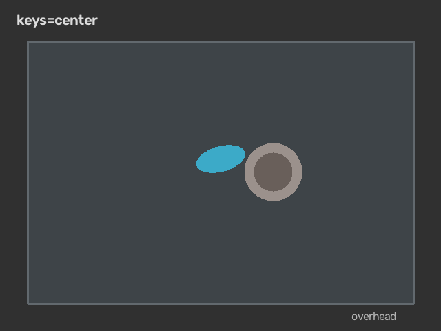
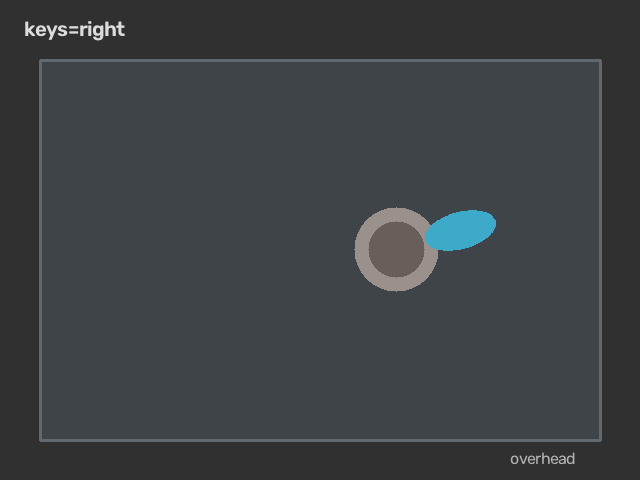
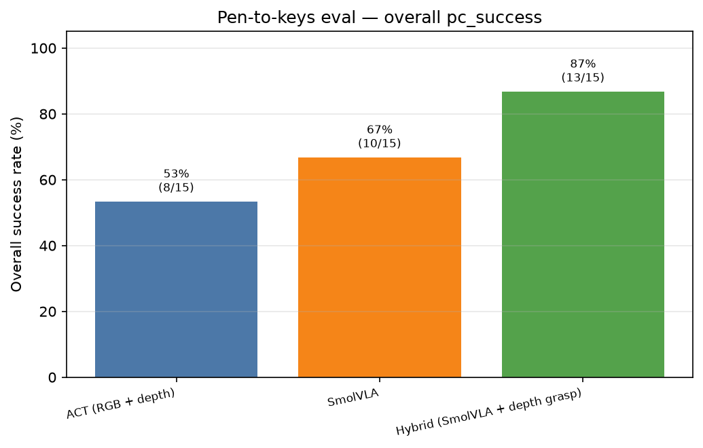
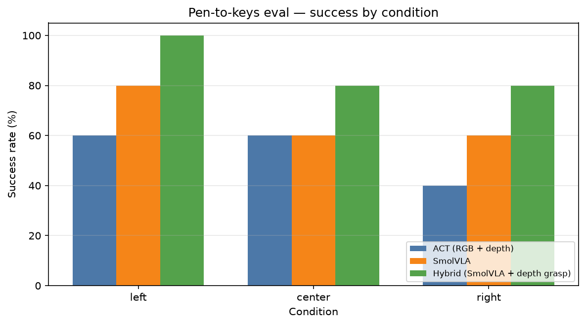

Output showcase
Real-robot visuomotor manipulation on a low-cost SO-101 dual-arm cell:
multi-view RGB, metric wrist depth, imitation learning (ACT), human-gated DAgger,
and protocol-based evaluation with pc_success reporting.

Overhead scene (keys/cup heritage setup; same cell as bag-clip task).
Task
Primary development target and legacy evaluation protocol.
config/eval/bag_clip_in_bowl.yaml,
~48 teleop episodes in so101_bag_clip_bowl,
default ACT baseline (ResNet-18 + depth tokens, chunk 100).
Heritage: pen-to-keys / keys-into-cup on the same hardware
(config/eval/pen_to_keys.yaml) —
used for README visuals, fixture eval summaries, and the pre-registered powered matrix in the research programme.
Distributed sensing & control
Mac runs teleop, training, and eval; Omen publishes wrist + overhead streams over ZMQ.
Mac — control & learning
- Leader / follower SO-101 arms
python -m so101CLI- Dashboard, record, train, eval
Omen — sensing
- Intel D405 wrist (RGB + metric depth)
- Overhead USB camera
publish_d405.py
Real observation frames
Committed photos and illustrative condition layouts from assets/frames/.

Wrist depth & contact-phase views (training / hybrid grasp):



Pen-to-keys condition layouts (fixture eval strata):



Evaluation outcomes
Reported manipulation performance uses protocol eval (summary.json → pc_success), not train loss.
Exploratory ACT protocol eval
Incomplete budget — transparency only (see research paper § early scores).
Rough overall success on logged bag-clip runs to date. Not a substitute for the pre-registered keys matrix or fixture charts.
Illustrative pc_success charts
Generated from committed fixture JSON in assets/eval/ (15 trials, 3 conditions).


Reproduction pipeline
Default bag-clip workflow; optional HG-DAgger and compare-eval.
bash scripts/08_record.sh bash scripts/10_train_act.sh bash scripts/11_eval_act.sh # → outputs/eval/.../summary.json bash scripts/18_dagger.sh bash scripts/19_train_dagger.sh POLICY_PATH=outputs/train/act_so101_bag_clip_bowl_dagger bash scripts/11_eval_act.sh python -m so101 compare-eval
Documentation & research
Deep dives on GitHub (blob links).